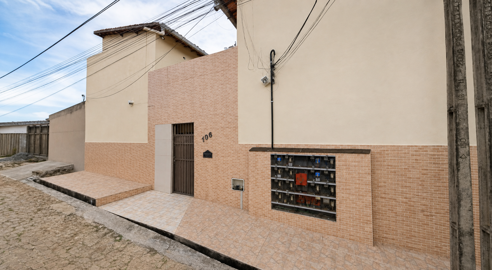

Rua Eng. José Onofre Marques, 106
Alugue no São José com atendimento direto.
Consulte unidades disponíveis, tire dúvidas sobre valores e combine uma visita com a equipe.

Unidades cadastradas
0 apartamentos
0 disponíveis hoje
Atendimento local
Um jeito simples de consultar apartamentos para aluguel.
O Residencial Matilde Carreiro fica na Rua Eng. José Onofre Marques, no bairro São José. Este site foi criado para mostrar as unidades cadastradas, separar apartamentos livres e alugados, e facilitar o contato com a equipe de atendimento.
Por que ajuda
Você vê o básico antes de chamar.
Os apartamentos disponíveis aparecem separados para facilitar sua consulta.
Unidades disponíveis e alugadas aparecem separadas para evitar contato em apartamento indisponível.
O formulário já informa qual apartamento chamou sua atenção para a equipe retornar melhor.
Localização
Endereço no bairro São José.
A região tem referências úteis para o dia a dia, como mercado, academia, transporte e serviços. Confira o mapa e confirme as informações com a equipe antes da visita.
Ver no mapaAcademia Biofit
Referência de academia registrada na Rua Eng. José Onofre Marques, no bairro São José.
Abrir no mapaAssaí na Av. Padre Cícero
Referência de atacarejo no bairro São José, conforme informações públicas do próprio Assaí.
Abrir no mapaLinha Centro / São José
Há referência de linha de ônibus Centro / São José atendendo a região da Rua Eng. José Onofre Marques.
Ver regiãoBairro São José
Endereço em área com perfil residencial e comercial, ideal para quem valoriza praticidade no aluguel.
Ver endereçoApartamentos
Unidades para aluguel
Este site mostra unidades para consulta de aluguel. Não trabalhamos com venda de imóveis. Valores, disponibilidade e condições de locação devem ser confirmados com a equipe antes da visita.
Como funciona
Como consultar e agendar.
Escolha a unidade
Veja as informações cadastradas e escolha a unidade que deseja consultar.
Agende a visita
Envie seu nome, WhatsApp, apartamento de interesse e melhor horário para retorno.
Confirme as condições
A equipe informa valores atualizados, disponibilidade, documentos e próximos passos.
Documentos comuns
RG, CPF, comprovante de renda e comprovante de residência costumam ser solicitados. A lista final deve ser confirmada pela equipe.
Visita ao apartamento
O agendamento depende da disponibilidade da unidade e dos horários de atendimento informados pela equipe.
Informações conferidas
Antes de tomar decisão, confirme valor, status, condições de locação e regras do residencial.
Dúvidas frequentes
Perguntas comuns antes de alugar.
Como sei se o apartamento ainda está disponível?
O site mostra o status cadastrado, mas a disponibilidade deve ser confirmada com a equipe no atendimento.
Quais documentos preciso para alugar?
Normalmente são solicitados documentos pessoais, comprovante de renda e comprovante de residência. A lista final é informada pela equipe.
Tem garagem?
Cada unidade pode ter uma condição diferente. Veja a informação no card do apartamento e confirme antes da visita.
Aceita pet?
Essa informação precisa ser confirmada com a equipe de atendimento, pois pode depender da unidade e das regras do residencial.
Como agendar uma visita?
Escolha um apartamento disponível e envie seus dados pelo formulário. A equipe retorna para combinar o melhor horário.
O valor pode mudar?
Sim. Valores e condições podem ser atualizados, por isso tudo deve ser confirmado no atendimento.
Contato
Fale com a equipe do Residencial Matilde Carreiro
Atendimento simples para consultar disponibilidade, tirar dúvidas e combinar visita.
- WhatsAppAdicionar número oficial da equipe de atendimento
- E-mailAdicionar e-mail oficial da equipe de atendimento
- EndereçoR. Eng. José Onofre Marques, 106 - São José, Juazeiro do Norte, CE